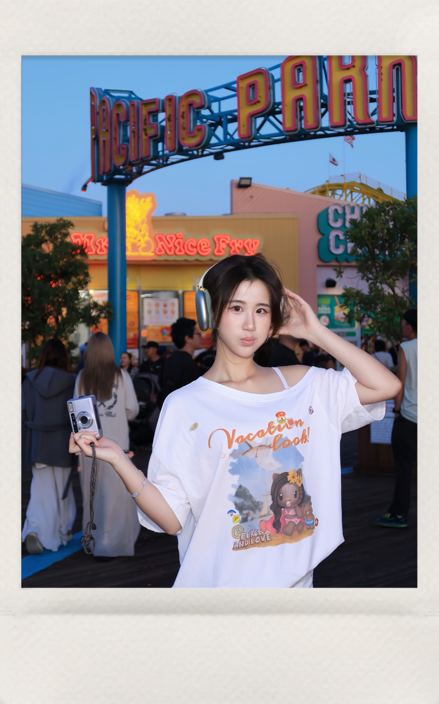

University of Washington · Seattle
数字媒体传播 · 硕士
核心课程：社交媒体传播与战略、用户界面与视觉设计、法律、数据与隐私、视频叙事基础
个人履历
市场营销×内容×品牌×产品运营
数字媒体传播硕士，擅长把用户洞察转译成内容策略、品牌传播与可执行的产品运营方案。
意向岗位：运营 / 市场 / 品牌 / 产品营销
意向城市 上海 · 北京 · 深圳 · 天津 · 杭州 · 成都 · 广州

关于我
Hey, 你好！我是王梓萌，目前在华盛顿大学攻读数字媒体传播硕士。我的经历跨越品牌传播、社交媒体、内容运营和产品运营，但一直围绕同一件事：从用户和研究中找到真正值得表达的核心和策略，再把它落到内容、渠道与执行路径上，实现精准的资源匹配和有效传播。
我享受跨文化语境下的沟通，也重视数据复盘。审美敏锐、内容驱动，能够快速学习，并推动不同团队把想法变成可以落地的项目。
教育与校园经历
University of Washington · Seattle
核心课程：社交媒体传播与战略、用户界面与视觉设计、法律、数据与隐私、视频叙事基础
The University of Sydney · Sydney
核心课程：市场营销原理、数字媒体、视觉艺术基础、经济统计学、计量经济学、微观经济学、互联网变革
CAMPUS / 01
学生代表委员会常任专员
经民主投票当选，代表留学生参与学生会事务决策，审批各学生部门活动预算与资源调配；主导校园传播策略，统筹媒体对接、文案撰写和海报设计。
工作与实习
ByteDance · TikTok Live
参与 TikTok Live 海外 ToB 端直播产品运营，服务公会经纪人与中腰部、尾部主播成长，负责 AI 辅助直播工具的功能验证、本地化、试点运营与迭代。
结合 ASR、评论、打赏和粉丝团行为信号分析话题触发与下发效果，推动话题库从固定文案扩展为基于 TikTok 热度 Top 50 与事件导向的动态来源。试点阶段采纳率由约 30% 提升至约 50%。
针对 MENA 等市场中中文模板直译带来的语义偏差和字符超限，联动当地 POC 校准多语言话术，沉淀更新流程，并推动提词器容量由 50 字符扩展至 125 字符。
参与 AI 直播复盘报告从 0 到 1 的试点验证，产出上百份 HTML 报告，覆盖中东 12 家及东南亚 2 家公会；通过访谈和表格反馈归纳语言、内容识别、结构及视频切片问题，支持 prompt 与报告模块迭代。
MSL · Publicis Groupe
参与医疗器械行业品牌的传播与患者教育 Campaign，服务赛诺菲、信达生物、强生 MENTOR、爱尔康和沙特旅游局等项目，覆盖策略支持、内容执行与全渠道传播落地。
从客户调研中提炼“脂肪肝疾病认知缺失”的洞察，参与制定患者教育策略，策划易善复与南方周末《小心肝 大健康》中英双语微纪录片；协调纪录片拍摄、内容审核、9 位小宇宙博主合作，并支持人民日报健康客户端直播。
参与信达生物玛氏度肽核心卖点提炼、消费者语言转译与全渠道内容分发；支持强生 MENTOR 傲诺拉·炫彩新品新闻稿撰写及 2025 中国隆胸峰会现场执行。
独立分析爱尔康 × Z 世代零售健康报告洞察，协同视觉团队优化长图推文并跟踪舆情；参与沙特旅游局“寻梦沙特”在华活动的中英双语媒体对接与现场执行。
小红书
参与小红书春晚期间话题运营，服务《大家的春晚》与“TikTok 难民”两个重点项目，在直播实时性高、跨国流量突发的环境中完成话题策划、内容审核与数据追踪。
负责创作者话题引导、图文与短视频初筛、投流文案标准梳理和修改反馈。直播当天按节目单追踪自然热度、策划延伸话题，协同完成 UGC / KOL 内容审核与合规排查，保障 7 小时直播的内容安全。
通过内部数据工具及 Excel 追踪话题热度并输出数据表，支持运营策略快速调整；在 TikTok 海外用户集中涌入期间，实时筛选审核跨语言、跨文化 UGC / KOL 内容并优化流量呈现。
精选项目
品牌策略提案 · 项目负责人
面向 18 至 28 岁北美中国留学生，识别其高频消费 Starbucks、却对 APP 在线点单与 DIY 饮品功能认知不足的行为缺口，并将 APP 从“点单工具”重塑为“温暖情感陪伴”。
PROJECT / 02
独立运营主播账号全链路，覆盖内容策划、实时提词、短视频与数据复盘。3 个月内粉丝从 2 万增长至 7 万，并搭建 7 个粉丝社群与品牌商务合作路径。
PROJECT / 03
围绕 16 至 28 岁 K-pop 全球用户，提出“粉丝优先、偶像内容驱动、沉浸式文化学习”的产品定位，并完成产品原型与 3 轮一对一远程可用性测试。
能力与工具
消费者洞察、竞品分析、传播策略、产品定位、用户研究
Campaign 策划、内容营销、达人合作、社媒运营、跨文化传播
功能试点、本地化、用户反馈、数据复盘、流程沉淀、社群运营
Figma、Adobe Premiere Pro / Photoshop / InDesign、Excel、PowerPoint、SQL 基础、AI 工具
中文母语 · 英语可作为工作语言，能够完成英文访谈、方案沟通、文案撰写与跨团队协作。